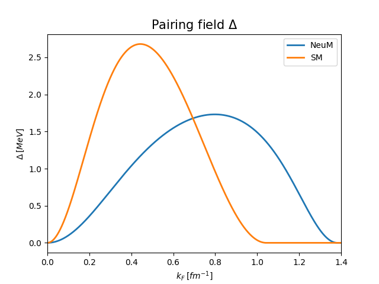
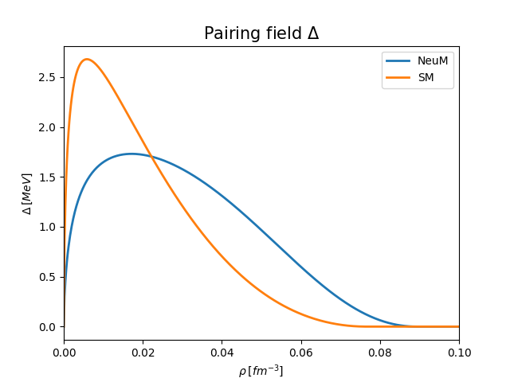
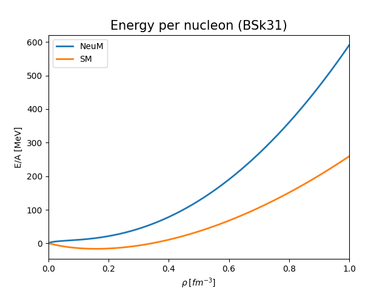
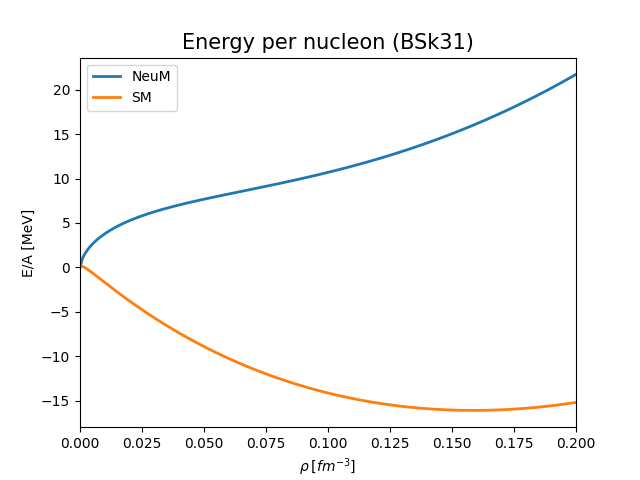

Physics
Here you can find a brief introduction to the physics of neutron stars.
Structure of Neutron Star
Crust
In the crust we can show certain densities that are relevant. The major division is to outer crust and inner crust.
Pairing S
 {kind=link}
{kind=link}
Pairing P
Give some references.
Pasta phase
Density Functional
Skyrme force
The first paper about vortex pinning within fully dynamical approach in neutron matter was [WlazlowskiSM+16]. A standard SLy4 type of functional was used (see [BMRS16]) of the following form:
where the consecutive terms have a physical meaning and interpretation (see Sec. 2 in [CBH+98]):
\(t_0\): contact (zero range) interaction
\(t_1, t_2\): momentum exchange (finite range term) and effective mass term (which is proportional to the kinetic density \(\tau\))
\(t_3\): for \(\gamma \rightarrow 1\) it is the three body term averaged over the third particle; in general a density-dependent term
\(W_0\): spin-orbit coupling
It turns out, that similarly as for the term \(t_3\) where in general the coefficient \(\gamma\neq1\), the terms \(t_1,t_2\) can be generalized to density dependent terms \(t_4,t_5\), respectively [CGP09]. Increasing the number of parameters leads to the better fit of very large amount of data.
Why BSk functional?
BSk density functional has been designed to describe accurately nuclear matter in neutron stars. Hence, the fitting was done not only using experimental nuclear data (as it is usually done) but also theoretical results for many-body calculations (for example pairing gaps [CLS06]).
- Experimental data
all atomic masses with \(Z,N \ge 8\) from the Atomic Mass Evaluation (2353)
nuclear charge radii
symmetry energy \(29 \mathrm{MeV} \le J \le 32 \mathrm{MeV}\)
incompressibility \(K_V = (240 \pm 10) \mathrm{MeV}\)
- N-body calculations using realistic forces
equation of state of pure neutron matter
\({}^1S_0\) pairing gaps in nuclear matter
effective masses in nuclear matter
stability against spin and spin-isospin fluctuations
History of development of BSk
There is a wide variety of different BSk functionals. Below the history of updates and improvements of the model is shown:
fit to realistic \({}^1S_0\) pairing gaps (no self-energy) (BSk16–17) [Cha10, GCP09]
removal of spurious spin-isospin instabilities [CGP09] (BSk18)
fit to realistic neutron-matter equations of state [GCP10] (BSk19–21)
fit to different symmetry energies [] (BSk22–26)
optimal fit of the 2012 AME [] (BSk27*)
genealized spin-orbit coupling [] (BSk28–29)
fit to realistic \({}^1S_0\) pairing gaps with self-energy [GCP16] (BSk30–32)
BSk functional
Based on [CGP09, GCP16] the Skyrme-type force reads:
The core of this BSk functional is the Skyrme functional showed above. Here, in addition to \(t_1,t_2\) terms, there are similar expressions that depend additionally on the power of density \(\rho\).
Energy
 {kind=link}
{kind=link}
Pure neutron matter
Neutron stars are built from pure neutron matter - this is very good approximation.
Symmetric matter
Atomic nuclei (especially those of lower mass) have similar number protons and neutrons. Therefore, it’s convenient to consider symmetric matter. We know that for larger number of nucleons, the system tends to be more neutron-rich to remove Coulomb interaction. In contrast to pure neutron matter, there is no symmetric nuclear matter in the nature. However this concept is very useful for theoretical considerations.
Pairing models
References for pairing models:
Todo
Expand this section: Summarize and fill in pairing models, physical meaning and papers for reference.
Aurel Bulgac, Piotr Magierski, Kenneth J Roche, and Ionel Stetcu. Induced fission of pu 240 within a real-time microscopic framework. Physical review letters, 116(12):122504, 2016. URL: https://link.aps.org/doi/10.1103/PhysRevLett.116.122504, doi:10.1103/PhysRevLett.116.122504.
LG Cao, U Lombardo, and P Schuck. Screening effects in superfluid nuclear and neutron matter within brueckner theory. Physical Review C, 74(6):064301, 2006. URL: https://link.aps.org/doi/10.1103/PhysRevC.74.064301, doi:10.1103/PhysRevC.74.064301.
E Chabanat, P Bonche, P Haensel, J Meyer, and R Schaeffer. A skyrme parametrization from subnuclear to neutron star densities part ii. nuclei far from stabilities. Nuclear Physics A, 635(1-2):231–256, 1998. URL: https://www.sciencedirect.com/science/article/pii/S0375947498001808, doi:10.1016/S0375-9474(98)00180-8.
Nicolas Chamel. Effective contact pairing forces from realistic calculations in infinite homogeneous nuclear matter. Physical Review C, 82(1):014313, 2010. URL: https://link.aps.org/doi/10.1103/PhysRevC.82.014313, doi:10.1103/PhysRevC.82.014313.
Nicolas Chamel, Stéphane Goriely, and John Michael Pearson. Further explorations of skyrme-hartree-fock-bogoliubov mass formulas. xi. stabilizing neutron stars against a ferromagnetic collapse. Physical Review C, 80(6):065804, 2009. URL: https://link.aps.org/doi/10.1103/PhysRevC.80.065804, doi:10.1103/PhysRevC.80.065804.
Nicolas Chamel, Stéphane Goriely, and John Michael Pearson. Pairing: from atomic nuclei to neutron star crusts. In Fifty Years of Nuclear BCS: Pairing in Finite Systems, pages 284–296. World Scientific, 2013. URL: https://doi.org/10.1142/9789814412490_0021, doi:10.1142/9789814412490_0021.
Stéphane Goriely, Nicolas Chamel, and JM Pearson. Further explorations of skyrme-hartree-fock-bogoliubov mass formulas. xii. stiffness and stability of neutron-star matter. Physical Review C, 82(3):035804, 2010.
Stéphane Goriely, Nikolas Chamel, and John Michael Pearson. Skyrme-hartree-fock-bogoliubov nuclear mass formulas: crossing the 0.6 mev accuracy threshold with microscopically deduced pairing. Phys. Rev. Lett., 102:152503, Apr 2009. URL: https://link.aps.org/doi/10.1103/PhysRevLett.102.152503, doi:10.1103/PhysRevLett.102.152503.
Stéphane Goriely, Nikolas Chamel, and John Michael Pearson. Further explorations of skyrme-hartree-fock-bogoliubov mass formulas. xvi. inclusion of self-energy effects in pairing. Physical Review C, 93(3):034337, 2016. URL: https://link.aps.org/doi/10.1103/PhysRevC.93.034337, doi:10.1103/PhysRevC.93.034337.
Gabriel Wlazłowski, Kazuyuki Sekizawa, Piotr Magierski, Aurel Bulgac, and Michael McNeil Forbes. Vortex pinning and dynamics in the neutron star crust. Physical review letters, 117(23):232701, 2016. URL: https://link.aps.org/doi/10.1103/PhysRevLett.117.232701, doi:10.1103/PhysRevLett.117.232701.